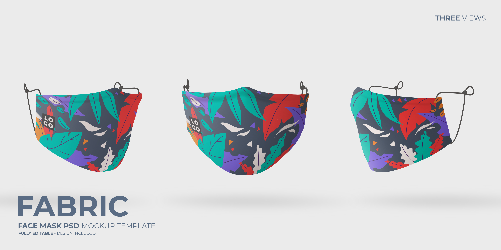

Home
About
Contact
faq

Covid-19 Guid lines
1. Wash your hands often
2. Avoid close contact
3. Cover your mouth and nose with a mask when around others
4. Cover coughs and sneezes
5. Clean and disinfect
6. Monitor Your Health Daily